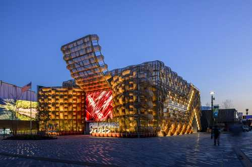

World Expo 2025 Osaka
Guest experience direction for two national pavilions at the same Expo: the Netherlands Pavilion and the Philippine Pavilion.
At Expo scale the design problem is not spectacle. Everyone has spectacle. The problem is attention. Visitors arrive tired, over-stimulated and already an hour into a queue, and you have roughly thirty seconds to give them a reason to look up. Then you have to leave them with something still working on them a week later.
The condition designed
A threshold that resets attention before any content begins.